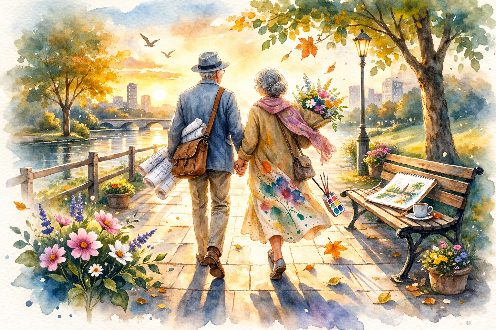
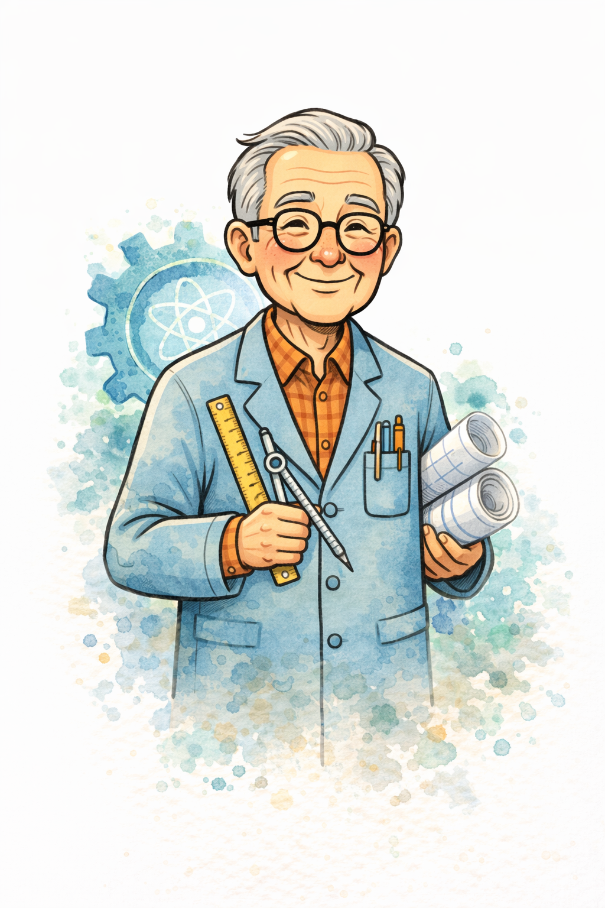

각 기사 아래 [기사 전문 복사] 버튼을 클릭하면 기사 원문이 클립보드에 복사되며, 이미지 파일도 자동으로 다운로드됩니다. 기사 형식·제목·내용은 자유롭게 수정해 사용할 수 있습니다.

공학도 남편과 화가 아내가 함께 살아온 40년간의 실화를 담은 온라인 연재 플랫폼 '공대생 할아버지, 미대생 할머니'가 정식 서비스를 시작한다고 밝혔다.
이 플랫폼은 이공계 출신의 논리적인 남편과 미술대학 출신의 감성적인 아내가 부딪히고 조화를 이루며 살아온 40년의 이야기를 6개 파트, 총 60편의 에피소드로 구성했다. 첫만남부터 연애, 결혼, 생활, 중년, 노년까지 이어지는 이야기가 매일 오전 한 편씩 무료로 공개된다.
두 사람의 이야기는 단순한 부부의 일상을 넘어, 전혀 다른 세계관과 언어를 가진 두 사람이 서로를 이해하고 받아들이며 함께 성장하는 보편적인 인간 이야기다. 수십 년을 함께하면서도 매일 새로 발견하는 서로의 다름과 닮음, 그리고 그 안에서 쌓여가는 깊은 사랑이 담겨 있다.
특히 각 에피소드마다 본문과 어울리는 수채화 일러스트가 함께 수록되어 글과 그림이 조화를 이루는 독특한 읽기 경험을 제공한다. 수채화 특유의 부드러운 번짐과 따뜻한 색감이 두 사람의 이야기와 어우러져 독자들에게 특별한 감성적 여운을 남긴다.
로그인이나 회원가입 없이 누구나 무료로 이용할 수 있으며, 모바일 환경에서도 편리하게 읽을 수 있도록 최적화되었다. 어디서나 손쉽게 접근할 수 있도록 웹 기반으로 설계되었으며, 별도의 앱 설치도 필요하지 않다.
개발팀은 "두 사람의 이야기는 단순한 부부 이야기를 넘어, 서로 다른 배경과 성격을 가진 사람들이 함께 살아가는 방법에 대한 이야기"라며 "독자들이 자신과 소중한 사람을 이 이야기 안에서 발견하길 바란다"고 전했다.
이 플랫폼은 독자가 이야기를 단순히 소비하는 것을 넘어, 자신의 삶을 되돌아보고 곁의 사람을 새로운 시각으로 바라볼 수 있는 계기를 제공하고자 기획됐다. 특히 오랜 세월을 함께한 부부, 연인, 또는 전혀 다른 성격의 동반자를 둔 모든 이들에게 깊은 공감을 선사할 것으로 기대된다.
플랫폼은 독자 참여 기능도 마련해, 에피소드마다 독자들이 공감과 댓글을 남길 수 있도록 설계됐다. 실제 비슷한 경험을 가진 독자들이 자신의 이야기를 나누는 공간이 되기를 기대하고 있다.
한편 개발팀은 연재 완결 이후 독자 반응을 반영해 종이책 출판도 검토 중이라고 덧붙였다. 책이 출판될 경우 수채화 일러스트 원본을 모두 담고, 독자들의 공감 에세이도 함께 수록하는 방식을 구상하고 있다. "독자가 함께 만들어가는 책"이라는 새로운 출판 모델을 시도할 계획이다.
앞으로 독자 참여형 이벤트도 순차적으로 진행할 예정이며, SNS를 통해 이야기 속 명장면 공유 캠페인도 운영할 계획이다. 연재가 진행되면서 독자들과 함께 이 이야기를 완성해가는 것이 개발팀의 최종 목표다.

정식 서비스를 시작한 온라인 연재 플랫폼 '공대생 할아버지, 미대생 할머니' 개발팀을 만나 이야기를 들었다. 공학도 남편과 화가 아내의 40년 실화를 담은 이 플랫폼은, 두 사람의 극적인 시각 차이를 유쾌하고 따뜻하게 풀어내 출시 전부터 화제를 모았다.
— 이 이야기를 연재하게 된 계기가 무엇인가요?
"처음엔 그냥 가족 안에서만 웃고 넘겼던 이야기들이에요. 어느 날 이 이야기들을 하나씩 기록해보니, 40년 동안 쌓인 에피소드가 60개가 넘더라고요. 이걸 혼자 가지고 있기가 너무 아까웠습니다. 나이가 들수록 잊혀지기 전에 기록으로 남겨두고 싶다는 마음도 컸어요."
— 이야기를 디지털 플랫폼으로 선택한 이유가 있나요?
"책보다는 더 많은 사람이 접근하기 쉬운 형태를 원했습니다. 특히 회원가입도, 결제도 없이 누구나 읽을 수 있어야 한다고 생각했어요. 이 이야기가 책 한 권 살 여유가 없는 젊은이에게도, 스마트폰을 처음 배우는 어르신에게도 닿길 바랐습니다."
— 논리적인 남편과 감성적인 아내의 충돌, 어떻게 이야기로 담았나요?
"사실 처음엔 충돌이 정말 많았어요. '이건 빨강입니다'와 '이건 노을색이에요'처럼 같은 걸 보면서도 완전히 다른 언어를 쓰는 거죠. 하지만 40년을 함께 살다 보니, 그 다름이 충돌이 아니라 오히려 서로를 더 풍요롭게 만들어준다는 걸 알게 됐습니다. 그 발견의 과정이 이 이야기의 핵심입니다."
— 60편이라는 분량을 선택한 이유는요?
"40년이라는 세월을 담기에 60편이 적당하다고 느꼈어요. 너무 짧으면 삶의 층위가 얕아지고, 너무 길면 독자들이 지쳐서 완결까지 함께하기 어렵죠. 6개의 파트에 10편씩, 파트마다 하나의 '시절'을 담아내는 구성을 택했습니다. 첫만남의 설렘, 연애의 혼돈, 결혼의 각오, 생활의 현실, 중년의 깊이, 그리고 노년의 완성 — 이 여섯 가지가 이 이야기의 뼈대입니다."
— 수채화 일러스트를 함께 수록한 이유가 있나요?
"화가 아내의 이야기이기도 하니까요. 글로만 전달하기 어려운 감정들을 수채화가 대신 말해준다는 느낌이 있어요. 그림을 먼저 보고 글을 읽는 독자도 있고, 글을 읽고 나서 그림을 보는 독자도 있는데, 두 방식 모두 새로운 경험을 준다는 게 재밌습니다. 하나의 에피소드를 두 번 즐기는 셈이죠."
— 가장 애착이 가는 에피소드가 있다면요?
"2부 연애 파트의 '엑셀 데이트 계획표' 에피소드요. 남편이 데이트 코스를 엑셀로 정리해 왔을 때, 처음엔 황당했는데 그 계획 안에 자신이 담겨 있더라고요. '당신이 좋아하는 카페, 당신이 보고 싶다고 했던 전시회, 당신이 먹고 싶다고 했던 파스타' — 그 효율적인 언어 안에 담긴 마음이 더 감동적이었습니다."
— 독자들에게 전하고 싶은 메시지는?
"달라도 괜찮다는 것, 그리고 그 다름이 결국 삶을 더 아름답게 만든다는 것입니다. 우리 이야기가 그 증거가 되길 바랍니다. 지금 곁에 있는 나와 다른 사람을, 조금 더 따뜻하게 바라볼 수 있게 되었으면 해요. 40년이 지난 지금도 저희는 여전히 서로에 대해 새로 발견하고 있거든요."
연재 플랫폼 '공대생 할아버지, 미대생 할머니'의 전체 연재 구성이 공개됐다. 총 6개 파트, 60편으로 구성된 이 연재는 공학도 남편과 화가 아내의 40년 이야기를 시간 순서로 담아냈다.
1부 '첫만남'(1~10편)은 미술관 앞에서 처음 만난 두 사람의 이야기로 시작된다. 시간을 계산하던 남자와 노을의 빛깔을 바라보던 여자의 첫 만남, 전혀 다른 두 언어를 가진 사람들이 서로에게 이끌리는 과정을 담는다. 논리와 감성의 첫 번째 충돌이자, 처음으로 '다름'이 매력으로 느껴지는 순간들이 이 파트의 핵심이다.
2부 '연애'(11~20편)에서는 엑셀로 만든 데이트 계획표, '이건 빨강입니다' vs '이건 노을색이에요'의 색깔 논쟁, 논리적인 고백 등 두 사람의 연애 방식이 충돌하고 또 매력이 되는 과정이 펼쳐진다. 가장 유쾌하고 공감 포인트가 많은 파트로, 연애 경험이 있는 독자라면 누구나 자신의 이야기를 떠올릴 것이다.
3부 '결혼'(21~30편)에서는 스프레드시트로 만든 프로포즈, 수채화 청첩장, 신혼여행지 선택을 둘러싼 논리와 감성의 전쟁 등 결혼 전후의 에피소드를 담는다. 두 가정, 두 가치관이 하나로 합쳐지는 과정에서 겪는 크고 작은 갈등과 타협, 그리고 그 안에서 자라는 사랑이 그려진다.
4부 '생활'(31~40편)에서는 결혼 후 일상을 함께하며 비로소 상대방의 세계를 진짜로 이해하기 시작하는 이야기가 펼쳐진다. 서로의 방식을 존중하고, 때로는 상대의 언어를 배우며 조금씩 닮아가는 두 사람의 모습이 따뜻하게 담긴다. '다름'이 점차 '우리다움'으로 바뀌어가는 전환점을 담고 있다.
5부 '중년'(41~50편)에서는 세월이 쌓이며 생기는 깊이와 여유를 이야기한다. 처음엔 싸웠을 만한 일들을 이제는 웃으며 넘기고, 서로를 설명하지 않아도 아는 경지에 이르는 과정이 담긴다. 중년의 무게와 아름다움을 함께 담아낸 파트다.
6부 '노년'(51~60편)은 이 이야기의 가장 빛나는 챕터다. 40년이 쌓인 두 사람이 서로에게 여전히 새로움을 발견하고, 함께 걷는 공원 길이 처음보다 더 풍요로운 이유를 깨닫는 이야기다. 마지막 60편은 두 사람이 첫만남의 장소로 다시 돌아가는 에피소드로 마무리된다.
개발팀은 "6개 파트의 흐름이 단순한 연대기가 아니라, 두 사람의 관계가 '충돌 → 이해 → 조화 → 완성'으로 성숙해가는 서사 구조"라고 설명했다. 독자들이 자신의 삶과 관계의 어느 지점에서든 공감할 수 있도록 설계했다는 것이다.
모든 에피소드는 매일 오전 공개되며, 각 편마다 본문과 어울리는 수채화 일러스트가 함께 수록된다. 로그인 없이 누구나 무료로 이용 가능하다. 짧은 분량으로 구성된 각 에피소드는 출퇴근길 스마트폰으로도 충분히 읽을 수 있는 호흡으로 설계됐다.
연재 플랫폼 '공대생 할아버지, 미대생 할머니'가 기존 온라인 연재물과 차별화된 지점은 단연 수채화 일러스트다. 단순히 삽화를 추가하는 수준이 아니라, 각 에피소드의 감정과 분위기를 그림이 직접 전달하는 방식을 택했다.
플랫폼 측에 따르면 각 수채화는 에피소드의 핵심 장면이나 감정을 담아 제작됐다. 글로 표현하기 어려운 미묘한 감정의 결, 두 사람이 함께하는 순간의 공기 같은 것들을 그림이 대신 전달한다. 수채화 특유의 경계가 흐릿한 번짐과 색의 겹침은, 두 사람의 서로 다른 세계가 하나로 녹아드는 이야기의 본질과 절묘하게 맞닿아 있다.
독자들은 그림을 먼저 보고 이야기를 추측한 뒤 글을 읽거나, 글을 읽은 후 그림에서 새로운 의미를 발견하는 두 가지 방식으로 즐길 수 있다. 개발팀은 "이 두 가지 순서 모두 전혀 다른 경험을 준다"며 "한 에피소드를 두 번 즐기는 셈"이라고 설명했다.
수채화 일러스트가 이 플랫폼의 핵심 요소가 된 데는 또 다른 이유가 있다. 주인공 아내가 미술대학 출신의 화가라는 사실과 직결된다. 이야기 속에서 아내가 바라보는 세상을 독자도 함께 눈으로 볼 수 있도록 하는 장치다. 글이 남편의 언어라면, 그림은 아내의 언어인 셈이다.
각 일러스트는 에피소드의 배경이 되는 계절, 시간대, 장소의 분위기를 반영한다. 봄날의 설레는 첫만남은 연한 분홍과 연두로, 연애 시절의 혼돈과 설렘은 따뜻한 오렌지와 보라로, 노년의 깊고 안정된 사랑은 황금빛 노을로 표현된다. 색이 이야기를 먼저 읽는 방식이다.
수채화 일러스트는 각 에피소드 공개일에 맞춰 함께 업데이트되며, 모바일과 데스크톱 환경 모두에서 최적화된 형태로 표시된다. 작은 스마트폰 화면에서도 그림의 감성이 충분히 전달될 수 있도록 구도와 색감이 설계됐다.
개발팀은 "그림을 보고 글을 읽었을 때와 글을 읽고 그림을 봤을 때, 두 번의 감동이 모두 다르다"며 "독자들이 각자의 순서대로 즐기기를 권한다"고 전했다. 향후 수채화 원본 인쇄물 제공과 굿즈 제작도 검토 중인 것으로 전해졌다.
'공대생 할아버지, 미대생 할머니' 플랫폼은 기존 출판 방식과 다른 길을 선택했다. 책을 먼저 만들어 독자를 기다리는 대신, 무료 연재로 독자를 먼저 만나는 방식을 택한 것이다.
개발팀은 "좋은 이야기를 가능한 많은 사람이 읽을 수 있어야 한다고 생각했다"며 "접근성을 높이기 위해 로그인도, 결제도 필요 없는 완전 무료 플랫폼으로 설계했다"고 밝혔다. 이는 독자를 먼저 확보한 뒤 출판을 결정하는 이른바 '역방향 출판 모델'의 시도다.
매일 오전 한 편씩 새 에피소드를 공개하는 방식도 기존 연재 플랫폼과 차별화된다. 독자들이 다음 이야기를 기다리며 일상 속에서 작은 설렘을 느끼게 하려는 의도다. 매일의 공개라는 리듬이 독자의 일상과 함께 호흡하는 콘텐츠가 되길 바라는 것이다.
또한 독자 반응을 보며 이야기 방향을 조율하고, 독자 참여형 이벤트도 계획하고 있다. "독자가 이야기의 소비자가 아니라 함께 만들어가는 참여자가 되길 원한다"는 것이 개발팀의 철학이다. 댓글과 공감 기능을 통해 독자들이 자신의 이야기를 나누고, 그것이 다시 이야기에 영향을 주는 순환 구조를 만들고자 한다.
이 방식은 기존 출판업계의 관행과는 확연히 다르다. 출판사의 기획 → 작가 선정 → 원고 완성 → 마케팅의 순서가 아니라, 이야기 → 독자 → 반응 → 출판의 흐름을 택했다. 독자가 먼저 이야기를 경험하고, 그 경험이 쌓여 책을 원하는 독자들의 요청으로 출판이 결정되는 구조다.
연재 완결 후에는 독자들과 함께 책 출판을 결정할 예정이다. 구독자 수와 독자 의견을 반영해 종이책 출판 여부를 결정하는 이른바 '독자 참여형 출판' 방식을 시도한다. 책이 출판될 경우 수채화 원화를 모두 수록하고, 독자들의 공감 에세이도 함께 담을 계획이다.
개발팀은 "무료 연재가 끝이 아니라 시작"이라며 "이 이야기를 처음부터 함께 읽어온 독자들이 훗날 자신의 책장에 꽂힌 이 책을 보며 '내가 함께 만든 책'이라고 느낄 수 있으면 좋겠다"고 말했다.
공학과 예술. 세상에서 가장 다르다고 여겨지는 두 세계가 만나 40년을 함께했다. '공대생 할아버지, 미대생 할머니'의 이야기는 단순한 부부 이야기를 넘어, 서로 다른 세계의 사람들이 함께 살아가는 방법에 대한 이야기다.
이공계 출신의 남편은 모든 것을 수치로, 효율로 판단하려 했다. 반면 미대 출신의 아내는 같은 상황을 색과 감각으로 읽었다. 처음에는 이 차이가 끊임없는 갈등의 원인이었다. 똑같은 상황을 완전히 다른 방식으로 해석하고, 서로의 말이 닿지 않는 느낌이 낯설고 외롭기도 했다.
"'이건 빨강입니다'와 '이건 노을색이에요'의 차이가 얼마나 큰지, 함께 살아보기 전엔 몰랐어요. 그런데 10년쯤 지나니까, 그 다름이 충돌이 아니라 보완이라는 걸 알게 됐습니다. 그가 보지 못하는 걸 내가 보고, 내가 놓치는 것을 그가 잡아줘요."
이 이야기가 울림을 주는 것은, 두 사람만의 이야기가 아니기 때문이다. 우리는 누구나 나와 다른 사람과 함께 살아간다. 가족, 친구, 동료, 파트너. 그 다름을 어떻게 받아들이고 함께 성장하는가의 문제는 모두에게 공통된 과제다.
특히 최근 세대 간, 성격 유형 간 소통의 어려움이 사회 문제로 대두되는 상황에서, 이 이야기는 "다름을 어떻게 함께 살아가는 힘으로 만들 수 있는가"에 대한 40년의 실험이자 증거다.
개발팀은 "처음 10년은 서로를 이해하기 위한 전쟁이었고, 다음 10년은 서로의 언어를 배우는 시간이었으며, 그 다음 10년은 서로를 통해 자신을 더 잘 알게 되는 시간이었다"며 "마지막 10년은 그냥 함께 있는 것이 가장 완전한 상태라는 걸 아는 시간"이라고 표현했다.
"이 이야기를 읽으며 지금 내 곁의 다른 사람을 조금 더 따뜻하게 바라볼 수 있게 되길 바란다"는 것이 개발팀이 전하는 가장 진심 어린 메시지다. 다름은 극복해야 할 장애물이 아니라, 삶을 더 넓고 깊게 만드는 선물이라는 것. 이 40년의 이야기가 그 증거다.
서비스를 시작한 연재 플랫폼 '공대생 할아버지, 미대생 할머니'가 연재 닷새 만에 뜨거운 독자 반응을 얻고 있다. "우리 부부 이야기 같다", "부모님이 생각난다"는 댓글이 이어지며 SNS에서도 빠르게 확산되고 있다.
특히 2부 연애 파트의 에피소드들이 큰 반향을 일으켰다. "'이건 빨강입니다'와 '이건 노을색이에요'라는 대화가 남편이 저한테 하는 말 같아서 캡처해서 보내줬더니 둘이 한참 웃었어요"라는 댓글에 수백 명이 공감을 눌렀다. 엑셀 데이트 계획표 에피소드 역시 "이게 우리 남편인데..."라는 댓글과 함께 폭발적인 공감을 받았다.
30대 직장인 독자 A씨는 "매일 아침 출근하면서 오늘의 에피소드 읽는 게 루틴이 됐다"며 "짧지만 여운이 길어서 하루 종일 생각난다. 직장 동료한테도 추천했더니 그 동료도 남편에게 보내줬다고 한다"고 전했다.
50대 독자 B씨는 "나이 들수록 이런 이야기가 더 따뜻하게 느껴진다. 젊을 때는 남편과 다른 게 그렇게 싫었는데, 지금은 그 다름이 얼마나 우리를 풍요롭게 했는지 알 것 같다"고 전했다. 같은 50대 독자 C씨는 "1편을 읽고 바로 남편에게 링크를 보냈다. 남편도 '우리 이야기네'라고 했다"고 밝혔다.
20대 독자들의 반응도 눈길을 끈다. "아직 연애도 못 했는데 이런 사랑을 꿈꾸게 된다"는 댓글과 "미래의 내 모습이 이랬으면 좋겠다"는 반응이 이어졌다. 시니어 독자들 사이에서는 "공감 백 배, 우리 세대가 주인공인 이야기가 이렇게 많은 젊은 독자에게 읽히다니 뿌듯하다"는 반응도 나왔다.
개발팀은 "이렇게 많은 분들이 자신의 이야기처럼 공감해주실 줄 몰랐다"며 "독자 여러분의 반응이 이야기를 만들어가는 원동력이 되고 있다"고 감사를 전했다. 또한 "독자들의 댓글에서 우리가 담지 못한 또 다른 이야기들을 발견하고 있다"며 독자 참여형 에피소드 기획도 구상 중임을 밝혔다.
플랫폼은 무료로 이용 가능하며 별도 회원가입이 필요 없다. 매일 오전 새 에피소드가 공개되며, 지금 바로 1편부터 읽을 수 있다.
최근 콘텐츠 시장에서 시니어를 주인공으로 한 이야기들이 주목받고 있다. 그중에서도 '공대생 할아버지, 미대생 할머니'는 10~60대를 아우르는 폭넓은 독자층에게 공감을 얻으며 주목받고 있다.
2030세대 독자들은 "조부모님이 생각난다", "내 미래가 이랬으면 좋겠다"는 반응을 보이며 콘텐츠에 감정이입하고 있다. 4050세대는 "우리 부부 이야기 같다"며 직접 공감을, 시니어 독자들은 "공감 백 배"라는 반응을 보인다. 세대를 초월한 공감대가 형성되고 있는 것이다.
특히 이 플랫폼이 주목받는 이유 중 하나는 '젊은 시절의 이야기'로 시작한다는 점이다. 1부 첫만남부터 시작해 6부 노년까지 이어지는 구성은, 현재 시니어인 두 주인공이 젊었을 때의 이야기를 담고 있어 모든 세대가 각자의 시점에서 공감할 수 있다.
20대 독자는 1부의 첫만남에서 자신의 미래를, 4050세대는 3~4부의 결혼·생활에서 자신의 현재를, 시니어 독자는 5~6부의 중년·노년에서 자신의 삶을 발견한다. 같은 이야기이지만 독자의 나이에 따라 각기 다른 파트에서 가장 깊은 공감을 얻는 독특한 구조다.
또한 이 이야기에는 '시니어 콘텐츠'라는 틀을 넘어서는 보편성이 있다. 논리와 감성의 대화, 다름을 받아들이는 방법, 오랜 시간 함께하는 것의 의미 — 이 주제들은 나이와 관계없이 누구나 삶에서 한 번쯤 마주치는 질문들이다.
개발팀은 "나이 든 주인공이 아닌, 나이가 들어가는 과정을 담은 이야기"라며 "독자들이 자신의 삶의 어떤 시점과 겹쳐 읽을 수 있도록 설계했다"고 밝혔다. 이는 단순히 시니어를 위한 콘텐츠가 아니라, 삶의 모든 단계를 아우르는 이야기를 만들겠다는 기획 의도가 담긴 설계다.
플랫폼은 무료로 이용 가능하며, 매일 오전 새 에피소드를 공개하고 있다. 현재 연재 중인 에피소드는 플랫폼 메인 화면에서 바로 확인할 수 있으며, 이전 에피소드도 언제든 다시 읽을 수 있다.
연재 플랫폼 '공대생 할아버지, 미대생 할머니'가 단순한 부부 이야기를 넘어 STEM과 STEAM의 융합이라는 새로운 시각에서 주목받고 있다. 교육계와 문화계 일부에서는 이 이야기를 "이공계 사고와 예술적 감성이 어떻게 상호보완하는가를 보여주는 생생한 사례"라고 평가하기도 한다.
공학도인 남편은 데이터와 효율, 최적화의 언어로 세상을 본다. 화가인 아내는 감각과 감정, 직관의 언어로 같은 세상을 읽는다. 두 사람이 함께하며 각자의 관점이 서로를 보완하고 풍요롭게 만드는 과정이 이 이야기의 핵심이다. 이는 단순한 개인 이야기가 아니라, 서로 다른 사고 체계의 가치를 보여주는 살아있는 증거다.
STEM(과학·기술·공학·수학) 중심의 교육이 강조되는 한편, 최근에는 예술(Arts)을 더한 STEAM 교육의 중요성도 부각되고 있다. 이 이야기는 두 접근법이 현실에서 어떻게 만나고 서로를 강화하는지를 40년의 실제 삶을 통해 보여준다는 점에서 교육적 시사점도 크다.
또한 이 이야기는 진로 선택에 고민하는 젊은 세대에게도 메시지를 전한다. 이공계와 예술계의 경계가 점점 흐려지는 시대에, 서로 다른 분야의 사람들이 어떻게 협력하고 서로의 장점을 살릴 수 있는지에 대한 인사이트를 제공한다.
개발팀은 "이 이야기를 쓰면서 이공계 사고와 예술적 감성이 얼마나 강력한 조합인지를 다시금 느꼈다"며 "논리적 사고가 감성을 죽이는 것이 아니라, 오히려 감성이 표현될 공간을 만들어주고, 감성이 논리에게 따뜻한 이유를 부여한다"고 말했다.
이 이야기가 단순한 로맨스를 넘어 사회적 담론을 형성하는 콘텐츠로 주목받는 것은, 결국 이 이야기가 담고 있는 핵심 메시지 — '다름이 약점이 아니라 강점'이라는 것 — 이 오늘날 많은 사람들이 원하는 이야기이기 때문이다.
플랫폼은 매일 오전 새 에피소드를 무료로 공개하고 있으며, 로그인 없이 누구나 이용 가능하다. 총 60편이 연재될 예정이다.
연재 플랫폼 '공대생 할아버지, 미대생 할머니'가 60편의 연재 완결 이후 독자 참여형 방식으로 책 출판을 검토 중이라고 밝혔다. 독자 수와 반응을 보고 출판 여부를 결정하는 이른바 '역방향 출판 모델'이다.
개발팀은 "일반적으로 책을 먼저 만들고 독자를 찾는 방식이 출판의 공식이지만, 저희는 독자를 먼저 만나고 그 다음에 책을 만들고 싶었다"며 "무료 연재를 통해 충분한 독자가 이 이야기를 사랑하게 되면, 그때 함께 책을 만드는 것이 맞다고 생각한다"고 밝혔다.
이 방식은 출판업계에서 최근 주목받고 있는 크라우드펀딩 출판과도 궤를 같이한다. 독자가 먼저 존재하고, 그 독자들이 원하는 책이 만들어지는 구조다. 하지만 이 플랫폼은 한 발 더 나아가, 독자들이 책의 내용에도 참여할 수 있는 방식을 구상하고 있다.
책이 출판될 경우, 온라인 연재 때 수록된 수채화 일러스트를 모두 인쇄본으로 담고, 독자 에세이나 연재 후기도 함께 수록하는 방식을 구상 중이다. 독자가 단순히 이야기를 읽는 것을 넘어 책의 일부가 되는 참여형 출판이 목표다.
"이 책을 들고 책장에 꽂는 날, 독자들이 '내가 이 책을 함께 만들었다'는 기분을 느낄 수 있도록 하고 싶다"는 것이 개발팀이 그리는 최종 목표다. 단순한 출판물이 아니라, 이야기를 함께한 사람들의 기억이 담긴 기념비적인 책을 만들겠다는 것이다.
또한 책 수록 예정인 수채화 일러스트는 인쇄 품질에 최적화된 원화로 제공될 예정이다. 디지털 화면으로 보던 수채화의 감성을 종이 위에서 더 깊이 느낄 수 있도록 할 계획이다. 일부 독자들 사이에서는 이미 "책이 출판되면 꼭 사고 싶다"는 반응이 나오고 있다.
개발팀은 "연재가 끝날 때쯤이면 독자들도 이 두 사람의 40년을 함께 걸어온 느낌이 들 것"이라며 "그 마지막 순간, 독자들과 함께 책으로 가는 여정을 시작하고 싶다"고 전했다.
{kind=link}
{kind=link}